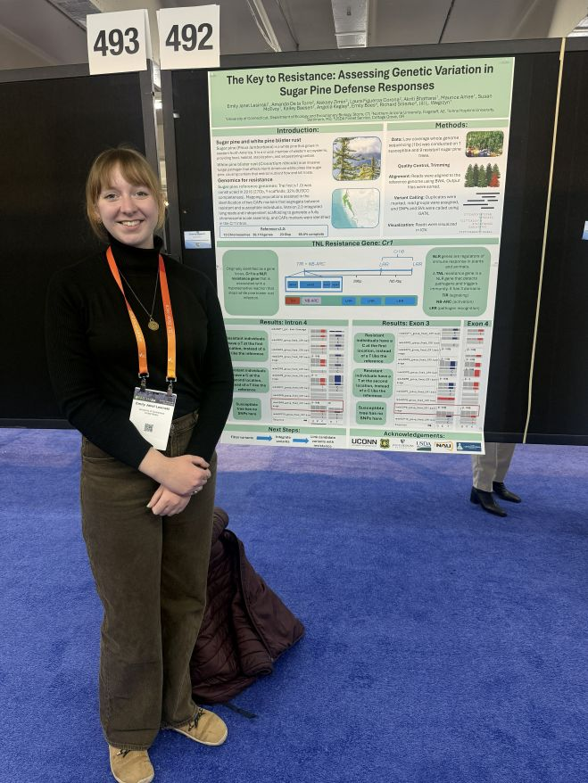
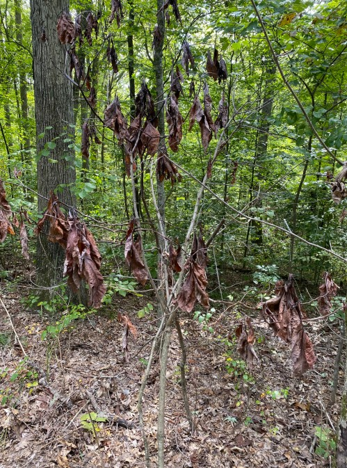
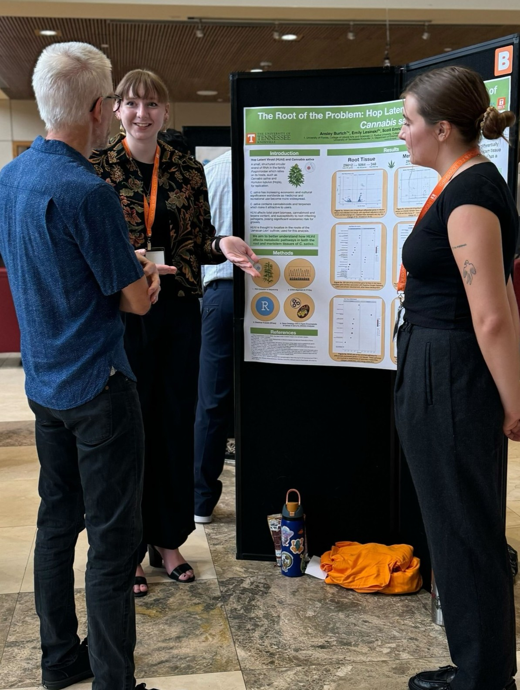
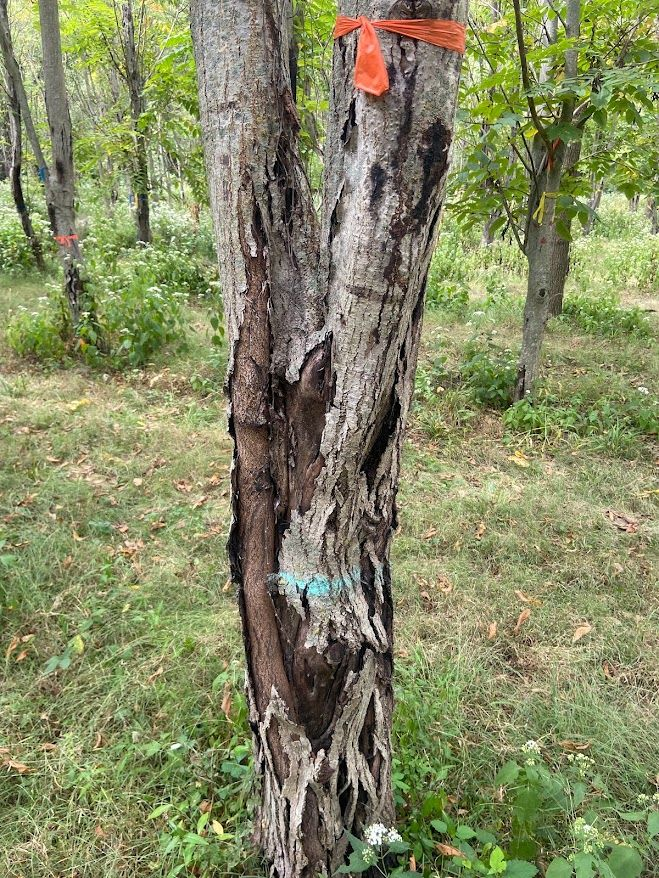

Pests and pathogens
Pests and pathogens are some of the greatest threats to our forests and crops.
Pests and pathogens are some of the greatest threats to our forests and crops.
By studying the transcriptome, we can get a better understanding of how gene expression plays a role in plant defense.
We can apply what we learn about disease resistance to breeding programs to breed better plants and trees.
When we combine all of these concepts, we can work to preserve our world's biological diversity.

My master's thesis project at UConn which will characterize the molecular defense responses of whitebark and Siberian pine to infection by an invasive pathogen, white pine blister rust.

A side project... etc etc

My undergraduate thesis project at Purdue University which resulted in the construction of a molecular phylogeny of a novel pathogenic fungus associated with wilting sassafras trees.
Photo credit: Olivia Bigham

A research project on differential gene expression in cannabis in response to infection by hops latend viroid completed during my REEU at the University of Tennessee Knoxville.

Work conducted with the Purdue Hardwood Tree Improvement and Regeneration Center to assess effectiveness of hybridization between butternut and Japanese walnut for disease resistance.
My interests outside of research include music and art.